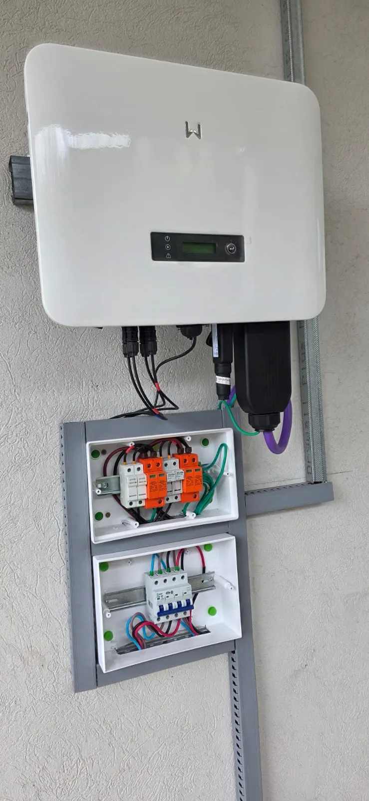
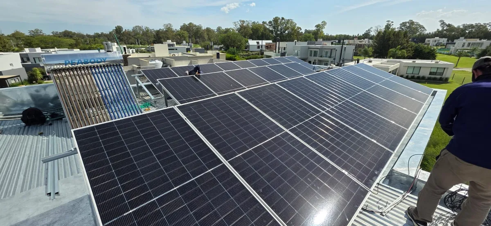
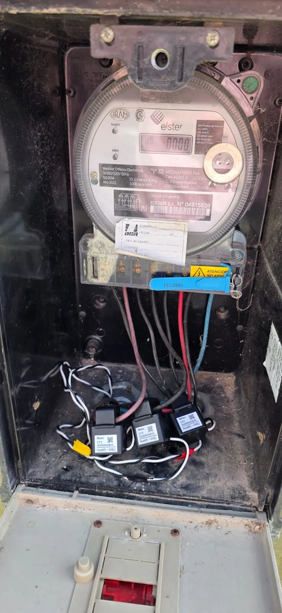

Que es un sistema solar hibrido?
Un sistema solar hibrido combina las ventajas del sistema On Grid (conectado a la red) con las del sistema Off Grid (autonomo con baterias). Es, literalmente, lo mejor de los dos mundos.
Durante el dia, los paneles generan energia que alimenta tu hogar. Si generas mas de lo que consumis, el excedente puede inyectarse a la red (y descontarse de tu factura bajo la Ley 27.424) o almacenarse en baterias para usar de noche o durante un corte de luz.
Cuando se corta la luz, el inversor hibrido detecta el corte automaticamente y cambia a modo bateria en milisegundos, sin que vos te enteres. Tu casa sigue con electricidad mientras el resto del barrio esta a oscuras. Cuando vuelve la red, el sistema se reconecta solo.
Es la solucion mas completa y versatil del mercado solar, y es cada vez mas popular en Buenos Aires por la combinacion de cortes de luz frecuentes y tarifas electricas en aumento.
Dato clave: Un sistema hibrido de 5kW con baterias de litio de 10kWh puede mantener tu heladera, luces, WiFi, cargas de celular y TV funcionando durante 8 a 12 horas de corte de luz, mientras simultaneamente ahorra hasta un 80% de tu factura electrica los dias normales.

Como funciona el sistema solar hibrido?
El sistema hibrido tiene una logica inteligente que prioriza automaticamente el uso mas eficiente de la energia segun el momento del dia y el estado de la red:
1. Paneles solares generan energia
Los paneles fotovoltaicos (Jinko Solar, LONGi, 550W-600W por panel) captan la luz solar y generan corriente continua. El sistema hibrido funciona con la misma calidad de paneles que el On Grid y el Off Grid.
2. El inversor hibrido gestiona todo
El corazon del sistema es el inversor hibrido. A diferencia de un inversor On Grid comun, este equipo puede trabajar en tres modos simultaneamente: alimentar tu casa, cargar las baterias y, si sobra energia, inyectarla a la red. Los inversores Growatt SPH y GoodWe ET que instalamos tienen esta capacidad integrada.
3. Prioridad inteligente de la energia
El inversor hibrido sigue esta logica automatica:
- Primero: alimenta el consumo de tu hogar en tiempo real
- Segundo: carga las baterias hasta que esten llenas
- Tercero: inyecta el excedente a la red (ahorro en factura)
De noche, el sistema usa la energia almacenada en las baterias. Si las baterias se agotan, toma energia de la red como una casa normal. Todo esto ocurre de forma automatica y transparente.
4. Respaldo automatico ante cortes de luz
Cuando se corta la luz, el inversor hibrido se desconecta de la red (por seguridad, para no energizar las lineas de la distribuidora) y pasa a modo isla en menos de 20 milisegundos. Tu casa sigue funcionando con la energia de las baterias y los paneles. Cuando la red vuelve, el sistema se reconecta automaticamente.
Transferencia instantanea: El cambio de red a bateria es tan rapido (menos de 20ms) que tus electrodomesticos y equipos electronicos ni se enteran. No se apaga la computadora, no se resetea el router, no se descongelan los alimentos.
Cuando necesitas un sistema hibrido?
El sistema hibrido es la opcion ideal cuando se cumple alguna de estas condiciones:
- Sufris cortes de luz frecuentes y no queres depender de un grupo electrogeno ruidoso y contaminante
- Tenes cargas criticas que no pueden quedarse sin electricidad: heladera con medicamentos, equipos medicos, camaras de seguridad, servidores, alarmas
- Tenes un comercio o negocio donde un corte de luz significa perdida de ventas, de mercaderia o de clientes (peluquerias, consultorios, almacenes, oficinas)
- Queres el maximo ahorro posible combinando reduccion de factura (On Grid) con proteccion ante cortes (baterias)
- Tu zona tiene tarifas electricas altas en horario nocturno y queres usar energia solar almacenada en lugar de comprar electricidad cara
- Buscas la solucion mas completa y a prueba de futuro, que se adapta a cualquier cambio en regulaciones o tarifas
- Trabajas desde tu casa y un corte de luz significa perder horas de productividad o desconectarte de reuniones importantes
Cuanto cuesta un sistema solar hibrido?
El sistema hibrido tiene un costo intermedio entre el On Grid y el Off Grid, porque incluye baterias pero tambien aprovecha la red electrica para optimizar el dimensionamiento:
- Sistema de 3 kW con baterias de litio (5kWh): desde USD 6.000 — ideal para casas con consumo moderado y respaldo de cargas esenciales
- Sistema de 5 kW con baterias de litio (10kWh): desde USD 9.500 — ideal para casas con aire acondicionado y respaldo amplio ante cortes
- Sistema de 10 kW con baterias de litio (15-20kWh): desde USD 16.000 — ideal para comercios, oficinas y casas con alto consumo
Estos valores incluyen paneles, inversor hibrido, banco de baterias de litio LiFePO4, estructura de montaje, cableado, protecciones DC y AC, tablero de transferencia y mano de obra de instalacion. El presupuesto es sin cargo y se personaliza para tu caso.
Financiacion disponible. Consultanos por las opciones de pago en cuotas. En muchos casos, el ahorro mensual en la factura de luz es mayor que la cuota, y ademas tenes respaldo ante cortes como beneficio adicional.
Ventajas del sistema hibrido vs On Grid puro
- Respaldo ante cortes de luz — el On Grid se apaga cuando se corta la red (por normativa); el hibrido sigue funcionando con baterias
- Autoconsumo nocturno — usas la energia almacenada de dia en lugar de comprar electricidad de noche
- Mayor independencia — dependes menos de la red y estas protegido ante cualquier eventualidad
- Optimizacion por franjas horarias — podes programar el sistema para cargar baterias en horario barato y usar la bateria en horario pico
Ventajas del sistema hibrido vs Off Grid puro
- Menor costo en baterias — no necesitas un banco de baterias tan grande porque la red sirve de respaldo
- Nunca te quedas sin energia — si las baterias se agotan, la red esta ahi como segunda linea de defensa
- Inyeccion de excedentes — el excedente no se desperdicia, se inyecta a la red y se descuenta de tu factura
- Dimensionamiento mas eficiente — el sistema no tiene que ser tan grande porque cuenta con la red

Monitoreo remoto en tiempo real
Todos nuestros sistemas hibridos incluyen monitoreo remoto via la app del inversor (Growatt ShinePhone o GoodWe SEMS Portal). Desde tu celular podes ver en tiempo real:
- Generacion solar: cuanta energia estan produciendo tus paneles en este momento
- Consumo del hogar: cuanta energia estas usando y de donde viene (paneles, bateria o red)
- Estado de las baterias: porcentaje de carga, ciclos acumulados, salud de la bateria
- Inyeccion a la red: cuanta energia excedente estas exportando
- Historial completo: graficos diarios, semanales y mensuales de generacion, consumo y ahorro
- Alertas: notificaciones si algo no funciona correctamente
Dato util: Con el monitoreo podes optimizar tus habitos de consumo. Por ejemplo, si ves que a las 14hs tus paneles generan mucha mas energia de la que consumis, ese es el mejor momento para poner el lavarropas, el lavavajillas o cargar el auto electrico.
Inversores hibridos que instalamos
El inversor hibrido es el componente clave que diferencia este sistema. Instalamos las dos marcas lideres del segmento:
Growatt SPH (3kW a 10kW)
- Inversor hibrido monofasico de alta eficiencia (97.5%)
- Compatible con baterias de litio de alto voltaje (Pylontech, Growatt ARK, BYD)
- Transferencia automatica a modo isla en menos de 20ms
- Monitoreo via app ShinePhone y plataforma web ShineServer
- Garantia de 10 anos (extensible a 15)
- Certificado CAMMESA para inyeccion a red en Argentina
GoodWe ET (3.6kW a 10kW)
- Inversor hibrido trifasico y monofasico de alto rendimiento
- Compatible con baterias Lynx Home de GoodWe y bancos de terceros
- Funcion UPS (Uninterruptible Power Supply) con cambio instantaneo
- Monitoreo via SEMS Portal (app y web)
- Garantia de 10 anos
- Ideal para instalaciones comerciales y residenciales de alto consumo
Para quien es ideal el sistema hibrido?
- Hogares en zonas con cortes de luz frecuentes o servicio electrico inestable
- Familias que trabajan desde casa y necesitan conectividad continua
- Comercios donde un corte de luz genera perdidas: peluquerias, carnecerias, almacenes, consultorios
- Oficinas y estudios profesionales con equipos que no pueden apagarse
- Hogares con personas que dependen de equipos medicos electricos
- Propiedades con sistema de seguridad (camaras, alarmas, cercos) que requieren energia continua
- Quienes buscan la maxima independencia energetica sin resignar la comodidad de la red
- Inversores que quieren la solucion mas completa y a prueba de futuro
Marcas que instalamos
Trabajamos exclusivamente con marcas lideres del mercado solar global, con garantia de fabricante y soporte tecnico:
- Paneles: Jinko Solar, LONGi, Astronergy (550W-600W, Tier 1)
- Inversores hibridos: Growatt SPH, GoodWe ET
- Baterias de litio: Pylontech US3000C / US5000, Growatt ARK, BYD HVS
- Estructuras: Aluminio anodizado, montaje coplanar o inclinado
- Protecciones: Seccionadores DC, tablero AC con termica y diferencial, SPD, fusibles

Zona de cobertura
Instalamos sistemas solares hibridos en toda la Zona Sur de Buenos Aires:
- Guillermo Enrique Hudson
- Berazategui
- Florencio Varela
- Quilmes
- Almirante Brown
- Esteban Echeverria
- La Plata
- Avellaneda y Lanus